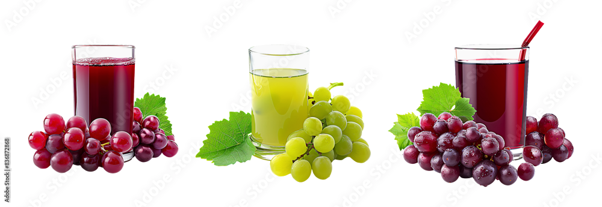

Les RAISINS
"Le raisin est le fruit de la vigne (Vitis). Il se présente sous forme de grappes composées de plusieurs grains (ou baies). C’est le deuxième fruit le plus cultivé au monde, après l’orange. Le raisin est consommé frais ou en grains séchés"

Etant un fruit éclatant de saveur, et il est riche en vertus
nutritionnelles. Voici quelques-uns de ses bienfaits pour la
santé :
- Prévention des maladies cardiovasculaires : Plusieurs
études ont montré que la consommation de jus de raisin
rouge améliore la fonction endothéliale (élasticité des
vaisseaux sanguins) et augmente la capacité antioxydante
du sang.
- Amélioration des fonctions cognitives : Des études chez
l’animal suggèrent que la consommation de jus de raisin
peut améliorer la mémoire et les capacités motrices,
bénéficiant ainsi aux fonctions cérébrales.
- Richesse en antioxydants : Le raisin contient de
nombreux flavonoïdes tels que la quercétine, la
myricétine et les anthocyanines, qui ont des propriétés
antioxydantes. Ces composés protègent le système
cardiovasculaire, freinent le vieillissement des
vaisseaux sanguins et renforcent la résistance
vasculaire.